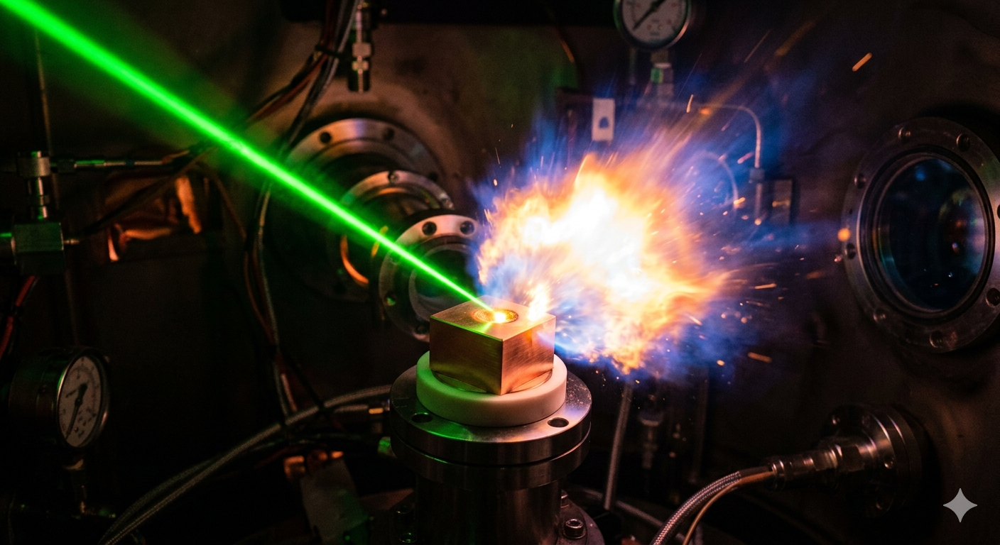
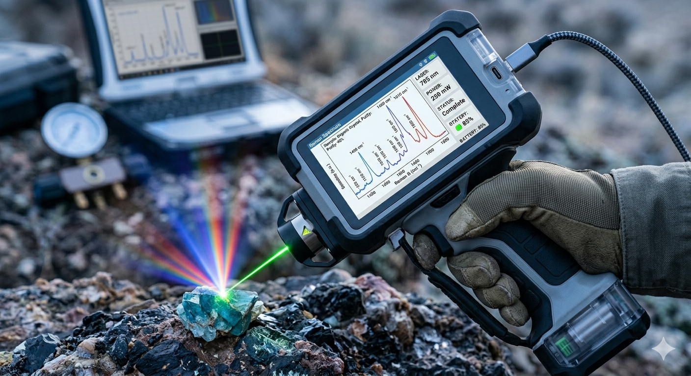
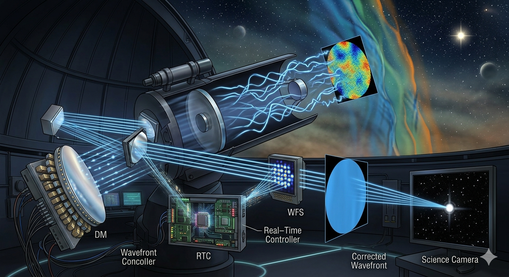

Laser Produced Plasma and Laser Induced Breakdown Spectroscopy (LIBS)
My research focuses on the fundamental understanding of Laser-Produced Plasma generated during laser–matter interaction and its application in LIBS for elemental analysis and real-time sensing. The work involves investigations of plasma formation mechanisms, emission dynamics, plasma evolution, self-absorption effects, and the influence of laser and ambient parameters on plasma characteristics under different excitation conditions. A major emphasis of this research is the development of robust methodologies for quantitative elemental analysis using LIBS. This includes both calibration-free approaches and calibration-based methods including machine learning framework for rapid and reliable compositional analysis. The research also explores plasma diagnostics for improving analytical accuracy, sensitivity, and reproducibility in complex material systems. Furthermore, LIBS is employed for rapid elemental classification, identification, and quantification of diverse materials, including metallic alloys, polymers, pharmacuiticals, biomedical specimens, and forensic materials.

Ultrafast Laser Processing
My research in ultrafast laser processing focuses on femtosecond laser direct writing (fs-LDW) and laser micromachining driven by the fundamental physics of ultrafast laser–matter interaction. The use of ultrashort fs laser pulses enables highly localized and deterministic energy deposition, allowing precise control over material modification processes such as ablation, refractive index change, and surface restructuring at micro- and nanoscale dimensions with minimal thermal damage. The research involves the fabrication and engineering of functional photonic and microstructured devices for advanced optical and sensing applications. Particular emphasis is placed on understanding the relationship between laser processing parameters, material response, and resulting structural and functional properties to achieve precise and reproducible device fabrication. Furthermore, the work explores laser-induced surface morphology modification for tailoring interfacial and surface properties through hierarchical micro/nanostructuring. This includes the development of functional surfaces with controlled wettability, superhydrophobicity, and enhanced optical or surface interactions.

Portable Raman Spectroscopic Systems for Field Applications
My research focuses on the development of portable and field-deployable Raman spectroscopic systems for rapid molecular identification and real-time chemical analysis. Raman spectroscopy is employed as a powerful vibrational spectroscopic technique for extracting chemically specific information from complex materials through inelastic light scattering and spectral fingerprinting. The work involves molecular classification, compositional analysis, and quantitative characterization of chemically heterogeneous and multicomponent systems, including energetic materials, polymers, biological samples, and other complex chemical matrices. Particular emphasis is placed on resolving overlapping spectral features, improving signal robustness, and enhancing analytical reliability for challenging real-world samples. Furthermore, research efforts are directed toward the development and instrumentation of compact, low-cost, and portable Raman spectroscopic devices optimized for real-time sensing outside conventional laboratory environments. This includes system integration, optical design optimization, hardware interfacing, data-driven spectral analysis, and development of user-interactive graphical user interface (GUI) for optimization and automation.
AI and Machine Learning in Optics and Spectroscopy
My research focuses on the integration of artificial intelligence (AI), machine learning (ML), and deep learning techniques with optical and spectroscopic systems for intelligent data analysis, automated decision-making, and real-time sensing applications. The work spans both classification and regression-based problems, including material identification, elemental classification, wavefront sensing, and quantitative compositional analysis. Particular emphasis is placed on the development of robust and interpretable machine learning pipelines through feature engineering, data fusion, feature selection, dimensionality reduction, and automated feature extraction techniques to improve performance under noise, data overlap, and experimental variability. The research also explores deep learning and transfer learning strategies for improving model generalization across different instruments, experimental conditions, and heterogeneous datasets. Also, efforts are directed toward the development of integrated GUI-based intelligent analytical frameworks for real-time implementation, enabling automated workflows from data acquisition and preprocessing to prediction and visualization.

Adaptive Optics and Wavefront Sensing
My research in adaptive optics focuses on the development of intelligent wavefront sensing and reconstruction techniques for high-speed and high-accuracy optical aberration measurement. The work combines optical wavefront sensing with machine learning to improve the performance, robustness, and computational efficiency of adaptive optical systems. A major focus of this research is the development of machine learning–assisted Shack–Hartmann wavefront sensing (SHWS) frameworks for rapid wavefront reconstruction. This includes the integration of feature engineering, dimensionality reduction, and deep learning models for direct prediction of wavefront aberrations from SHWS images.The developments aim to enable real-time adaptive optical correction and intelligent wavefront analysis for applications in ophthalmic imaging, microscopy, astronomy, laser systems, free-space optical communication, and high-resolution optical diagnostics.